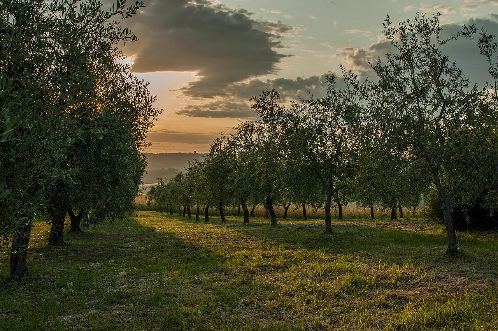
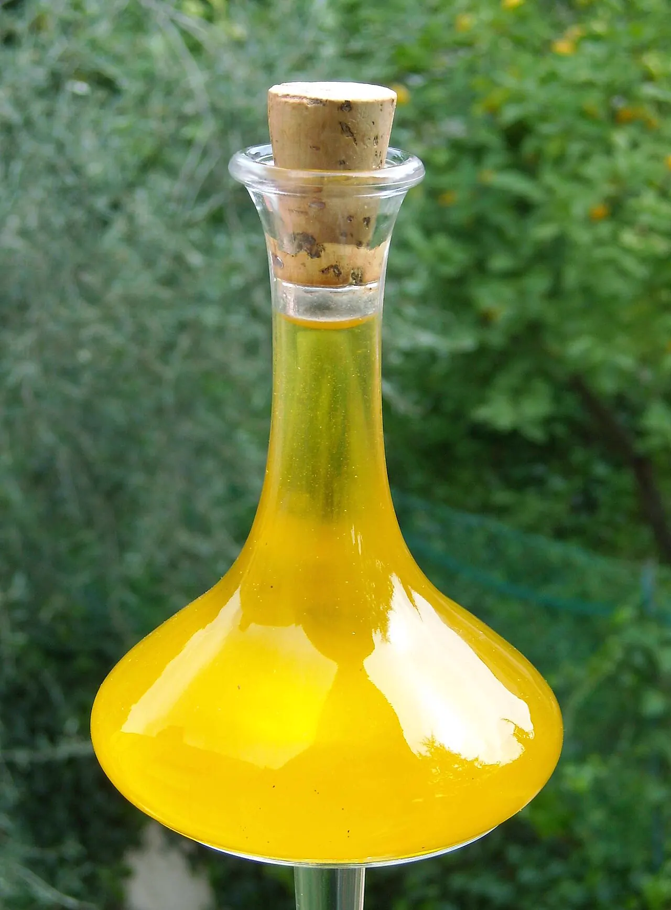
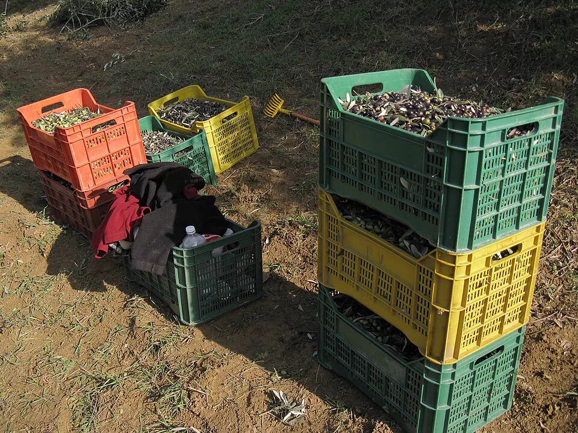
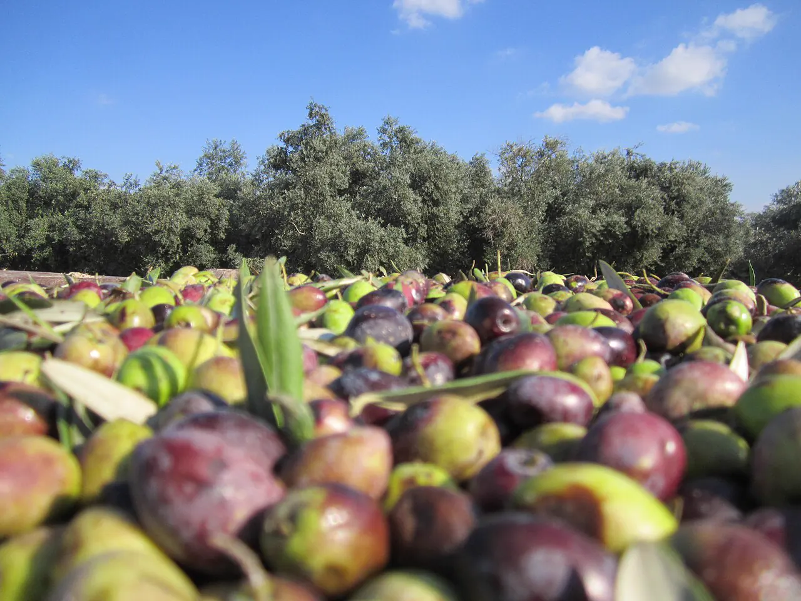
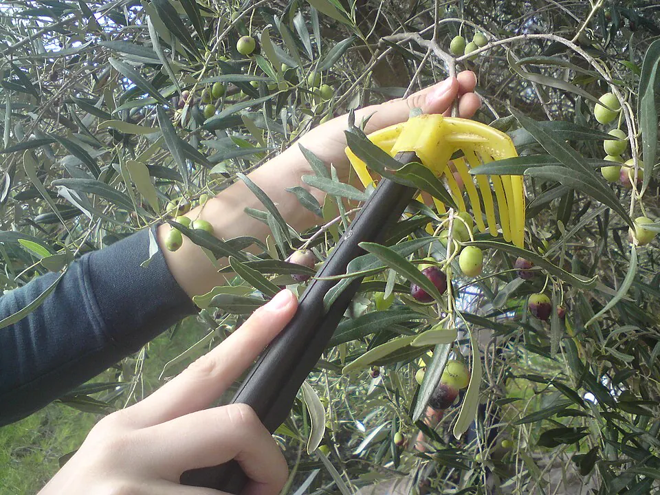
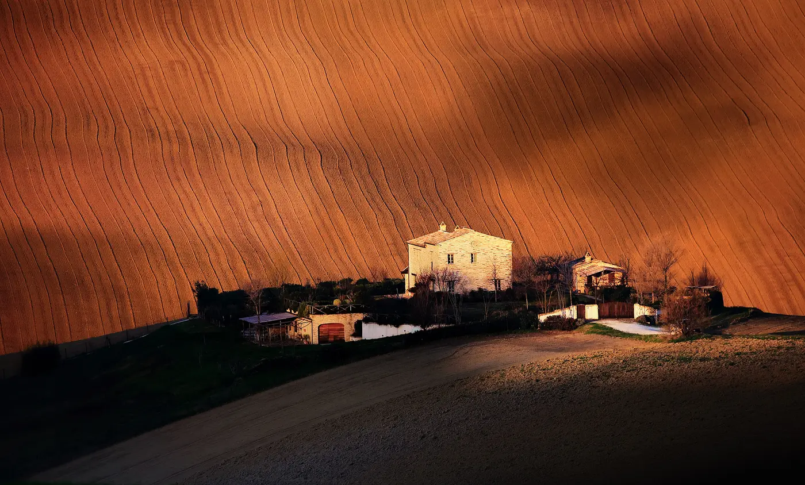

Olio nuovo dai colli pesaresi
L'olio d'oliva di Raffaele Bosco, raccolta 2026, dalle campagne interne pesaresi. Prezzo e formati su richiesta al +39 328 643 1359, anche su WhatsApp.
Olio d'oliva della raccolta 2026. Dalle olive delle campagne interne pesaresi.

Le olive delle campagne pesaresi
Le olive vengono dagli uliveti dell'entroterra di Pesaro, raccolte nell'autunno 2026 e portate a spremere.



Il produttore
Raffaele Bosco vende l'olio della sua raccolta a chi abita nelle campagne pesaresi e nei paesi vicini. Prezzo, formati e consegna si decidono con una telefonata o un messaggio.
L'olio a Pesaro e dintorni
L'olio si vende nell'entroterra pesarese e nelle zone vicine. Chiama o scrivi per sapere dove e quando ritirarlo.
- ZonaEntroterra pesarese
- Raccolta2026
- Prezzo e formatiSu richiesta
